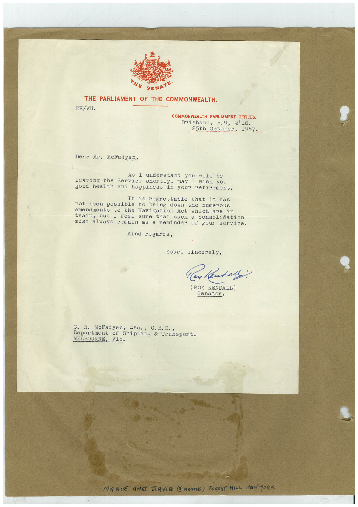

Book 1 · scan 082


Description
Transcription
Context
Review notes
Compare the machine draft with the scan. Handwriting and names need human review.
Artifacts
Edit the artifacts field in this note’s frontmatter to change these records. This summary is generated.
B01-S082-A01 — Letter & Handwritten note — Book 1, scan 082
Types: Typed document, Letter, Handwritten note
Scope: Whole scanned page; individual items can be split out during review.
Caption: Not mapped yet.
Caption source: Not recorded yet.
Caption status: unmapped
Machine transcription
SENATE• THE PARLIAMENT OF THE COMMONWEALTH. RK/WH. COMMONWEALTH PARLIAMENT OFFICES, Brisbane, B.9, Q'ld. 25th October, 1957. Dear Mr. McFadyen, As I understand you will be leaving the Service shortly, may I wish you good health and happiness in your retirement. It is regrettable that it has not been possible to bring down the numerous amenaments to the Navigation Act which are train, but I feel sure in that such a consolidation must always remain as a reminder of your service. Kind regards, Yours sincerely, Claude: (ROY KENDALL) Senator. C. H. McFadyen, Esq., C. B.E., Department of Shipping & Transport, MELBOURNE, Vic. MARIE ANG TAYIR (5 MONTHS) FOREST HILL NEWTORI